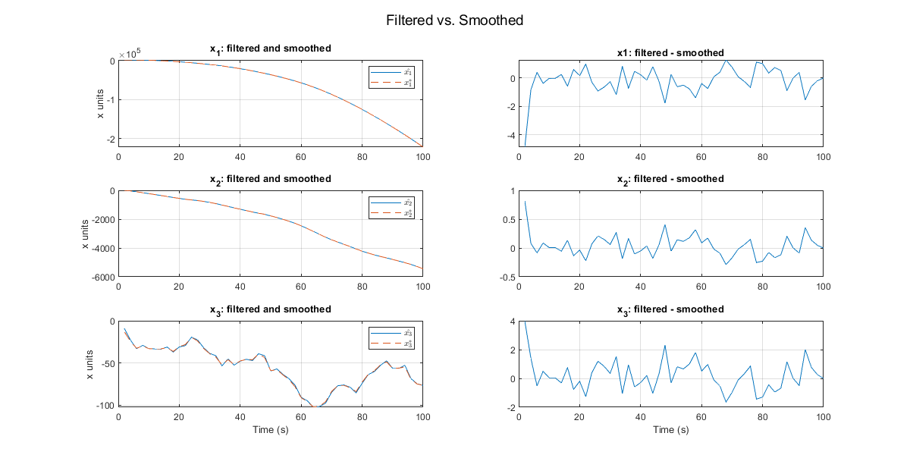

Contents
% Final prob 1: Problem Set 6, Number 3, except use the matrices Q(k) = [200, 10; 10, 20] and % R(k) = 3. Hand in plots of your filtered and smoothed time histories, and hand in numerical % values for xˆ(10), x∗(10), P(10), and P∗(10). Choose an appropriate test to determine whether % P(10) ≤ P∗(10). Comment on the qualitative smoothness of x∗(k) vs. xˆ(10). % set 6 prob 3: Calculate the smoothed estimates for the problem in kf example03a.m. Compare xˆ(10) % with x∗(10) and compare P(10) with P∗(10). Is P∗(10) ≤ P(10)? Do the smoothed state % time history estimate plots look “smoother” than the filtered state time history estimate % plots?
SRIF (forward dynamics)
clear; clc disp('EXAMPLE 03A') kf_example03a; Qk = [200, 10; 10, 20]; Rk = 3; uk = [0; 0]; nx = length(xhat0); nv = length(Qk); [xhat_arr_srif, Rxx_arr, zx_arr, zv_bar_arr, Rvv_bar_cell, Rvx_bar_cell] = ... srif( xhat0, P0, zhist, Fk, Gammak, Qk, Hk, Rk, uk, nx, nv);
EXAMPLE 03A
smoother (backward dynamics)
zx_star = zx_arr(end,:)';
Rxx_star = Rxx_arr{end};
% wx_star = wx;
% START AT k = N
x_star = inv(Rxx_star) * zx_star;
P_star = inv(Rxx_star) * inv(Rxx_star)';
Rvv = chol(inv(Qk));
zv = zeros(nv, 1);
% initialize
N = length(zhist);
x_star_arr = zeros(N, nx);
P_star_cell = cell(N,1);
x_star_arr(N,:) = x_star';
P_star_cell{N} = P_star';
% smoother filter
for k = N-1 : -1 : 1
zx_star = zx_arr(k+1, :)';
Rxx_star = Rxx_arr{k+1};
Rvv_bar = Rvv_bar_cell{k+1};
Rvx_bar = Rvx_bar_cell{k+1};
A = [ Rvv_bar + Rvx_bar * Gammak, Rvx_bar * Fk;
Rxx_star * Gammak, Rxx_star * Fk ];
[QA, RA] = qr(A);
R_QR = QA' * A;
Rxx_star = R_QR(nv+1:end, nv+1:end);
zv_bar = zv_bar_arr(k+1,:)';
z_star = QA' * [ zv_bar; zx_star ];
zx_star = z_star(nv+1:end);
% extract state and covariance
x_star = inv(Rxx_star) * zx_star;
P_star = inv(Rxx_star) * inv(Rxx_star)';
% save outputs
x_star_arr(k,:) = x_star';
P_star_cell{k} = P_star;
end
plot
fname = 'Filtered vs. Smoothed'; figure('name', fname, 'position', [100 100 1200 600]); n = 3; p = 2; subplot(n,p,1) plot(thist, xhat_arr_srif(:,1)); hold on; grid on; plot(thist, x_star_arr(:,1), '--'); title('x_1: filtered and smoothed'); legend('$\hat{x_1}$', '$x^*_1$', 'Interpreter', 'latex') ylabel('x units') subplot(n,p,2) plot(thist, xhat_arr_srif(:,1) - x_star_arr(:,1)); title('x1: filtered - smoothed'); subplot(n,p,3) plot(thist, xhat_arr_srif(:,2)); hold on; grid on; plot(thist, x_star_arr(:,2), '--'); title('x_2: filtered and smoothed'); legend('$\hat{x_2}$', '$x^*_2$', 'Interpreter', 'latex') ylabel('x units') subplot(n,p,4) plot(thist, xhat_arr_srif(:,2) - x_star_arr(:,2)); title('x_2: filtered - smoothed'); subplot(n,p,5) plot(thist, xhat_arr_srif(:,3)); hold on; grid on; plot(thist, x_star_arr(:,3), '--'); title('x_3: filtered and smoothed'); xlabel('Time (s)') legend('$\hat{x_3}$', '$x^*_3$', 'Interpreter', 'latex') ylabel('x units') subplot(n,p,6) plot(thist, xhat_arr_srif(:,3) - x_star_arr(:,3)); title('x_3: filtered - smoothed'); xlabel('Time (s)') sgtitle(fname);
periodogram
% [pxx_hat, fs_hat] = periodogram(xhat_arr_srif); % [pss_star, fs_star] = periodogram(x_star_arr); % % fname = 'Filtered vs. Smoothed PSD'; % figure('name', fname) % % subplot(3,1,1) % semilogy(fs_hat, pxx_hat(:,1)); hold on; % semilogy(fs_star, pss_star(:,1), '--'); % % subplot(3,1,2) % semilogy(fs_hat, pxx_hat(:,2)); hold on; % semilogy(fs_star, pss_star(:,2), '--'); % % subplot(3,1,3) % semilogy(fs_hat, pxx_hat(:,3)); hold on; % semilogy(fs_star, pss_star(:,3), '--');
hand in numerical values for xˆ(10), x∗(10), P(10), and P∗(10). Choose
an appropriate test to determine whether P(10) ≤ P∗(10). Comment on the qualitative smoothness of x∗(k) vs. xˆ(10).
disp('x^(10) = ') disp(xhat_arr_srif(10,:) ) disp('x*(10) = ') disp(x_star_arr(10,:)) disp('x^(10) - x*(10) = ') disp(xhat_arr_srif(10,:) - x_star_arr(10,:) ) disp('P(10) = ') Rxx10 = Rxx_arr{10}; Pxx10 = inv(Rxx10) * inv(Rxx10)'; disp(Pxx10 ) disp('P*(10) = ') disp(P_star_cell{10} ) disp('It can be shown that P*(10) < P(10):') disp('Norm(P(10)) = ') disp(norm(Pxx10) ) disp('Norm(P*(10)) = ') disp(norm(P_star_cell{10})) txt = [ 'x* is slightly smoother than x^. This is a good thing as we wish ', ... 'to retain as much valuable information in the data while reducing as ', ... 'much noise as possible without curve fitting to a particular function.', ... ] ; disp(txt) % In statistics and image processing, to smooth a data set is to create an % approximating function that attempts to capture important patterns in the % data, while leaving out noise or other fine-scale structures/rapid phenomena. % % In smoothing, the data points of a signal are modified so individual points % higher than the adjacent points (presumably because of noise) are reduced, % and points that are lower than the adjacent points are increased leading to % a smoother signal. Smoothing may be used in two important ways that can aid % in data analysis (1) by being able to extract more information from the % data as long as the assumption of smoothing is reasonable and (2) by being % able to provide analyses that are both flexible and robust.[1] Many % different algorithms are used in smoothing. % % Smoothing may be distinguished from the related and partially overlapping % concept of curve fitting in the following ways: % % curve fitting often involves the use of an explicit function form for the % result, whereas the immediate results from smoothing are the "smoothed" % values with no later use made of a functional form if there is one; % the aim of smoothing is to give a general idea of relatively slow changes % of value with little attention paid to the close matching of data values, % while curve fitting concentrates on achieving as close a match as possible.
x^(10) =
-3454.14901159571 -560.052811977033 -31.0412760936411
x*(10) =
-3454.30365843153 -560.017490062307 -30.8407969018893
x^(10) - x*(10) =
0.154646835822859 -0.035321914725273 -0.200479191751747
P(10) =
13.5520894202657 -1.70208065918152 -7.34473971512019
-1.70208065918152 2.31626499888182 0.377097282076377
-7.34473971512019 0.377097282076377 9.10633440247233
P*(10) =
12.6385332698102 -1.49342102335987 -6.16043485888851
-1.49342102335987 2.26860635896187 0.106597630927508
-6.16043485888851 0.106597630927508 7.57103961868193
It can be shown that P*(10) < P(10):
Norm(P(10)) =
19.1536883016155
Norm(P*(10)) =
16.8819091503244
x* is slightly smoother than x^. This is a good thing as we wish to retain as much valuable information in the data while reducing as much noise as possible without curve fitting to a particular function.
subfunctions
function [xhat_arr, Rxx_cell, zx_arr, zv_bar_arr, Rvv_bar_cell, Rvx_bar_cell] = ... srif( xhat0, P0, zhist, Fk, Gk, Qk, Hk, Rk, uk, nx, nv) % Initialize xhat_arr = []; Rxx_cell = {}; zx_arr = []; zv_bar_arr = []; Rvv_bar_cell = {}; Rvx_bar_cell = {}; % START AT k = 0: I = inv(P0); Rxx = chol(I); Rvv = chol(inv(Qk)); zv = zeros(nv, 1); zx = Rxx * xhat0; for k = 1:length(zhist) % PROPAGATION STEP % a) QR factorize A = [Rvv, zeros(2,3); -Rxx * inv(Fk) * Gk, Rxx * inv(Fk)]; [QA, RA] = qr(A); % [ Rvv_bar(k) [2x2], Rvx_bar(k+1) [2x3]; % 0 [3x2] , Rxx_bar(k+1) [3x3] ] = RA % b) orthonormal transformation B = [ zv; zx + Rxx * inv(Fk) * Gk * uk ]; [zv_zx_bar] = QA' * B; % c) extract Rxx_bar(k+1) and zx_bar(k+1) zv_bar = zv_zx_bar(1:nv); zx_bar = zv_zx_bar(nv+1:end); Rxx_bar = RA(nv+1:end, nv+1:end); % extract Rvv and Rvx bars Rvv_bar = RA(1:nv, 1:nv); Rvx_bar = RA(1:nv, nv+1:end); % MEASUREMENT UPDATE: % a) Cholesky factorize R Ra = chol(Rk); % b) Transform z(k+1) and H(k+1) za = inv(Ra)' * zhist(k); Ha = inv(Ra)' * Hk; % c) perform another QR factorization: [QB, RB] = qr([Rxx_bar; Ha]); % d) transform as [zx_zr] = QB' * [zx_bar; za]; % e) extract Rxx_bar(k+1) and zx(k+1) zx = zx_zr(1:nx); Rxx = RB(1:nx, :); xhat = inv(Rxx) * zx; zx_arr = [zx_arr; zx']; zv_bar_arr = [zv_bar_arr; zv_bar']; xhat_arr = [xhat_arr; xhat']; Rxx_cell{k} = Rxx; Rvv_bar_cell{k} = Rvv_bar; Rvx_bar_cell{k} = Rvx_bar; end end